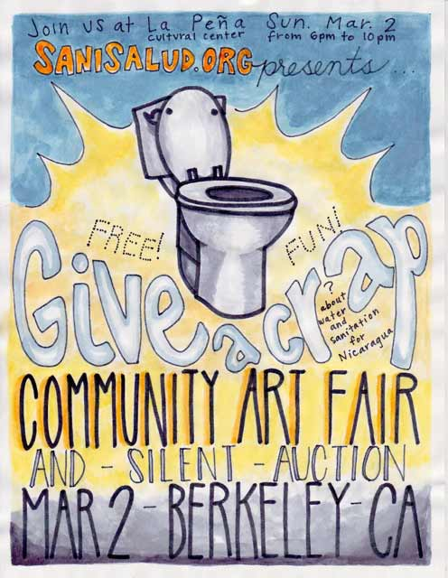

Sunday, March 2, 2014, 6 PM
Give A Crap Community Art Fair
La Peña Cultural Center, 3105 Shattuck Ave. Berkeley, CA 94705
Join us for Live Music, Food and Silent Art Auction
A highlight of the evening will be a special interdisciplinary panel exploring how artists, scientists, and activists inspired by poop are sharing creativity and knowledge across different disciplines.
Featured Panelists:
Dr. Charlotte Smith is a professor of Environmental Health Sciences at UC Berkeley.
Full Bio
Lauren Elder is an Environmental Artist, a CCA Adjunct Professor and an organizer of community projects.
Full Bio
Aileen Suzara is a chef, educator, and environmental justice advocate.
KQED Interview

Nikolas Wulff Bertulis is visiting faculty in Urban Studies and Design and Technology at the San Francisco Art Institute. His work draws from performance research, novel ecosystems and social technology.
Saturday, February 18, 2012, 7 PM
Community Art Fair - A Benefit for Monte Fresco, Nicaragua
Everybody Bikes Gallery, 1288 15 Ave. San Francisco, everybodybikessf.com
Live Music, Food, Art, Silent Auction, Craft Sale
Featuring art and handmade goods by local crafters and Nicaraguan artisans
Saturday, August 27, 2011, 7 - 9 PM
Greenmeadow Community Room in Palo Alto, CA
A night of learning, culture, advocacy, and fiesta!
Information, Salsa Dancing, Traditional Food, Nicaraguan Crafts Sale/Auction